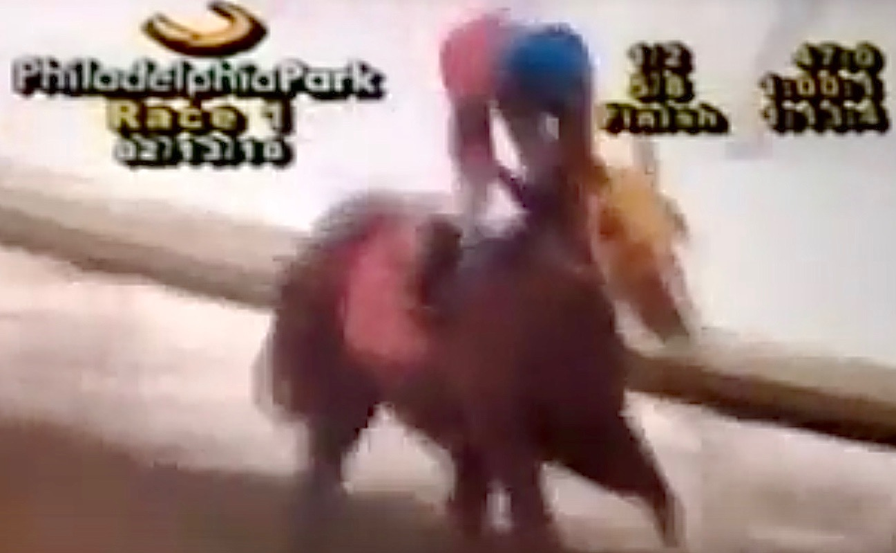

I was born in Pennsylvania at a breeding farm where a bunch of other thoroughbreds were raised to race on the track. My dam's (mom) name was Valkyrie and my sire's (dad) name was Storm Center, hence why my name is "Valkin Storm". A man named Raphael Kissoon purchased me when I was two from the breeding farm and trained me alongside jockey, Samuel Bermudez. I ran four races in my career as a race horse, finishing only two, in first and second, in the races I ran.
My racing career ended abruptly when I cracked my fetlock bone. This injury would be equivalent to breaking the ankle on human. I had major surgery to repair my fetlock and this involved screwing a screw through the ball of the bone to be able to still have full movement in that leg in my day to day life. After that injury, I was rescued by Turning for Home, a thoroughbred racehorse rescue program, where I was able to recover from such a severe injury.

After spending two years at the rescue, I was purchased by an older woman from Vermont who used me for trail riding. At this time, I was five and very spunky so the lady passed me on to a teenager who helped train me the basics of a sport called eventing, which is what I do today!
As you can see in this photo, my leg is all bandaged up from the injury that I had on the track.